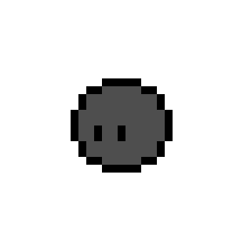
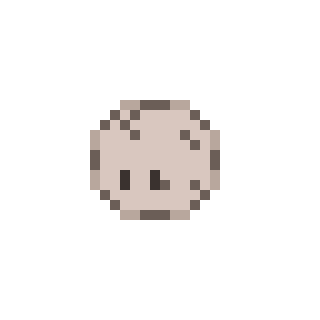
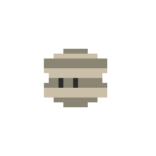
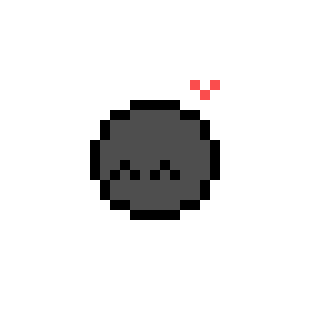

ROCKIE
몽돌
MENU

조약돌
수정 예정
이름
✎ 이름을 지어주면 애완돌이 기뻐해요 (호감도 +)
성향 요약
아직 알아가는 중이에요
내향적
관찰형
서늘함 선호
질문 진행도
0 / 0
🜨 요즘 부쩍 단단해지고 있어요. 다음 진화까지 조금만 더.
호감도
낯가림
0 / 100
돌보기
· 하루 한 번, 호감도 +2
인벤토리 · 눌러서 장착/해제
⌂착용
차양모자
▭
뿔테안경
✕
리본
♔잠김
왕관
스킨
· 표시용, 진행엔 영향 없음
진화 단계마다 새 스킨이 열려요. 원하는 모습을 골라 입혀보세요.
착용중
조약돌
기본

이끼돌
1단계

화강암
2단계
 🔒 잠김
🔒 잠김
수정
3단계

🔒 잠김운석
4단계

🔒 잠김보석돌
5단계
답변 히스토리
시스템 모니터
몽돌의 활동량은 컴퓨터 상태에 연결돼요.
부하가 높을수록 애완돌이 바쁘게 움직여요.
부하가 높을수록 애완돌이 바쁘게 움직여요.
꿈틀꿈틀 · 활동적
적당한 부하. 돌이 살짝 몸을 뒤척여요.
시스템—
사용자—
대기—
사용—
사용 가능—
전체—
스왑—
사용—
여유—
전체—
전원—
최대 용량—
사이클—
로컬 IP—
업로드—
다운로드—
일반
권한
애완돌 위치
애완돌 크기
DESK PET v1.0 · 나의 애완돌
© 2026 · 작고 단단한 친구
© 2026 · 작고 단단한 친구
처음부터 다시 키우기
모든 진행도·성향·호감도·설정이 지워지고 조약돌로 돌아갑니다. 되돌릴
수 없어요.